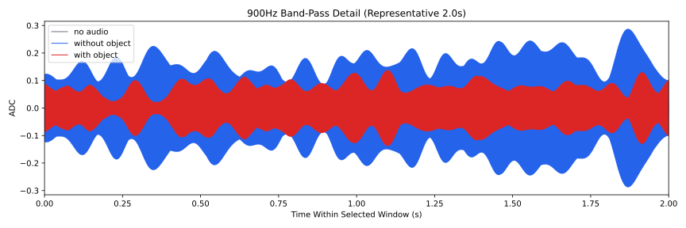
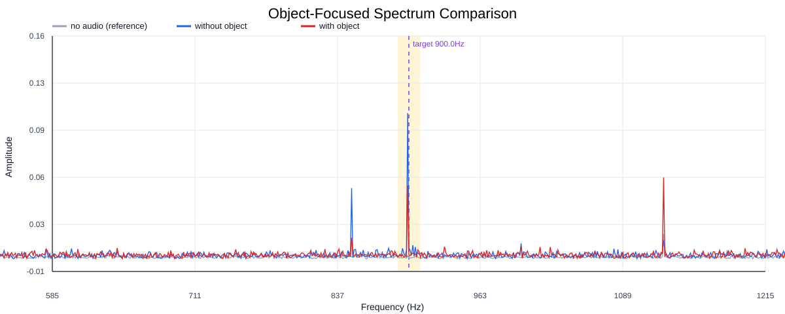
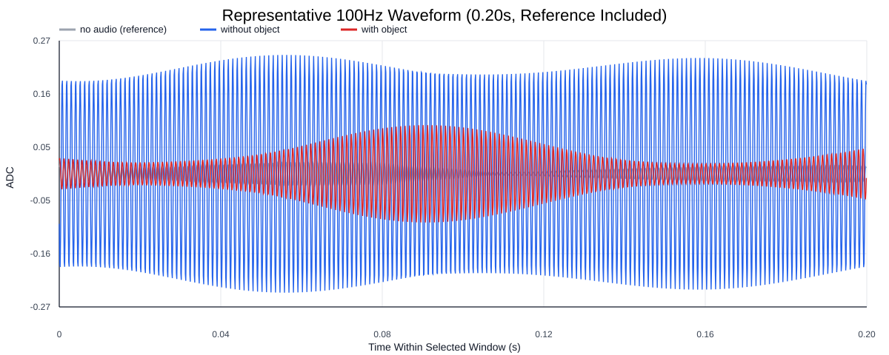
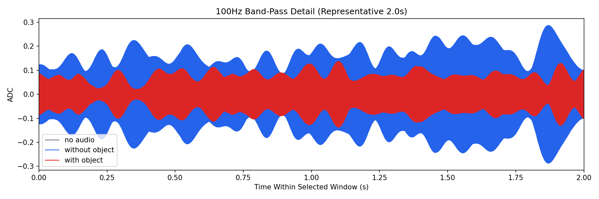
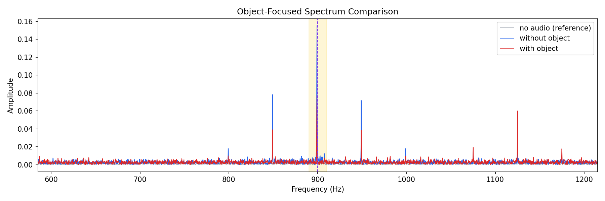
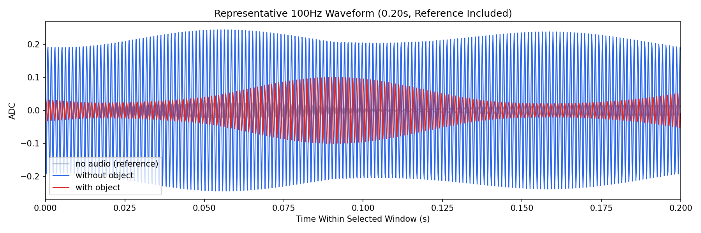

Background: F:\项目类文件夹\异物检测4.10\Data_Dual\frequency_sweep\0900Hz\repeat_05\raw\no_audio.csv
Without object: F:\项目类文件夹\异物检测4.10\Data_Dual\frequency_sweep\0900Hz\repeat_05\raw\without_object.csv
With object: F:\项目类文件夹\异物检测4.10\Data_Dual\frequency_sweep\0900Hz\repeat_05\raw\with_object.csv
| Metric | 无音频 | 100Hz无异物 | 100Hz有异物 | 无异物/无音频 | 有异物/无异物 | 有异物/无音频 |
|---|---|---|---|---|---|---|
| centered_rms | 0.125868 | 0.304346 | 0.313431 | 2.4180 | 1.0299 | 2.4902 |
| raw_target_amp | 0.000545 | 0.008127 | 0.002875 | 14.9187 | 0.3537 | 5.2775 |
| filtered_rms | 0.008196 | 0.109909 | 0.059308 | 13.4103 | 0.5396 | 7.2363 |
| filtered_target_amp | 0.000545 | 0.008127 | 0.002875 | 14.9187 | 0.3537 | 5.2775 |
| filtered_energy_ratio | 0.004240 | 0.130417 | 0.035805 | 30.7592 | 0.2745 | 8.4447 |
| window_filtered_target_amp_mean | 0.009769 | 0.149847 | 0.080513 | 15.3396 | 0.5373 | 8.2420 |
| window_filtered_target_amp_std | 0.005377 | 0.040498 | 0.021955 | 7.5323 | 0.5421 | 4.0834 |





